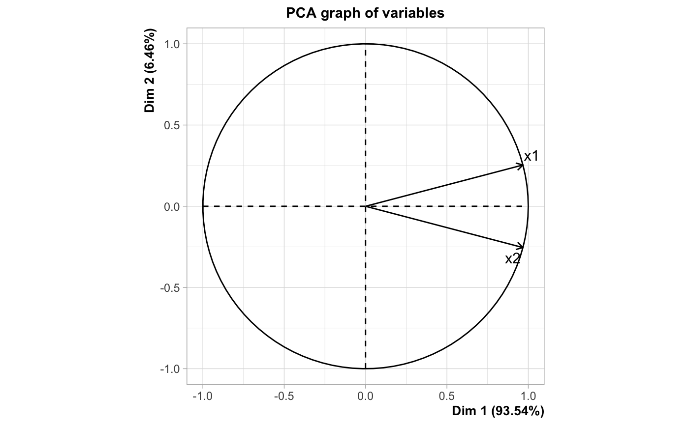
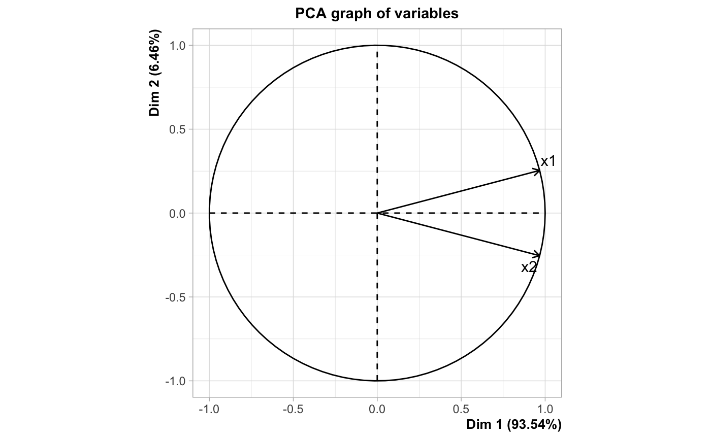
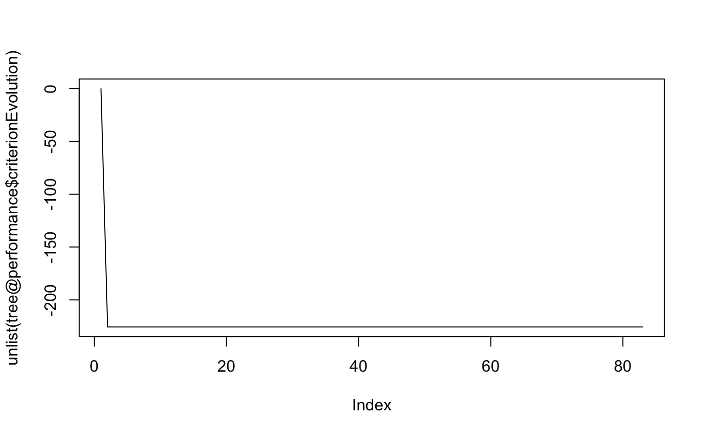
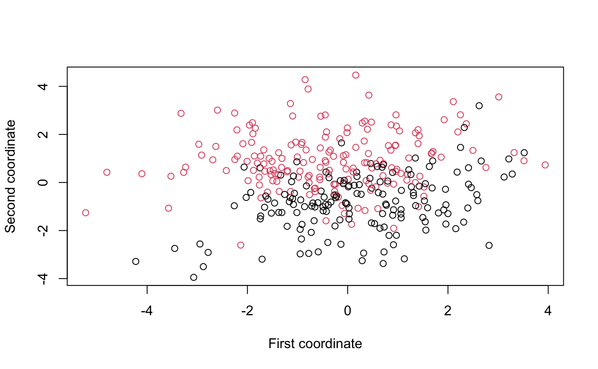
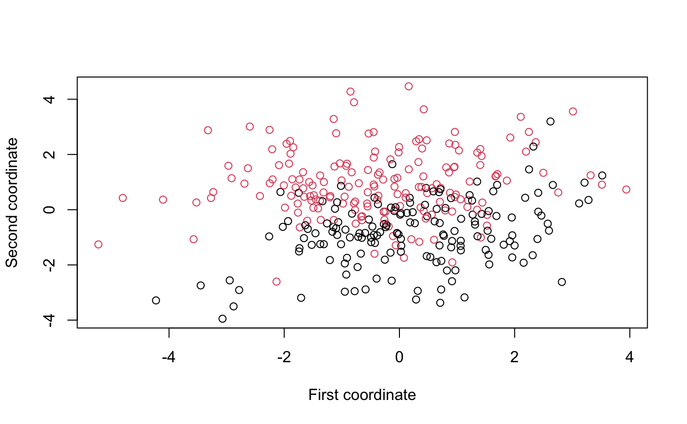
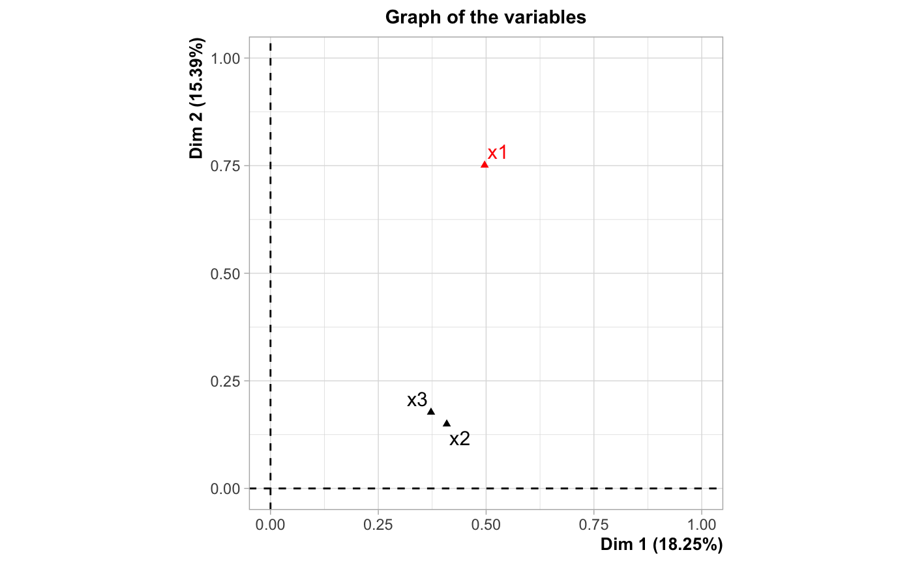
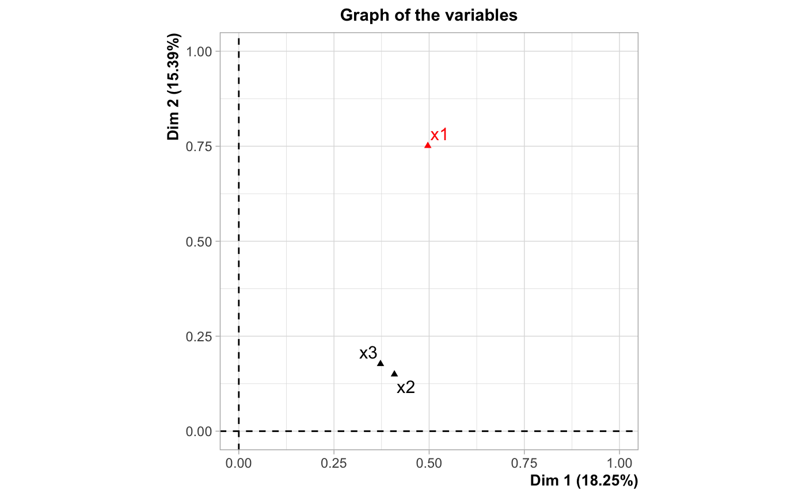
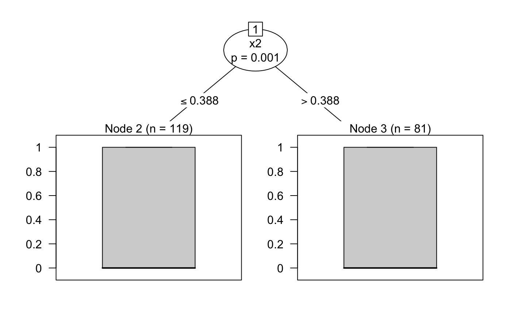

glmtree: logistic regression trees for efficient segmentation
Adrien Ehrhardt
2020-07-29
glmtree.RmdSegmentation
Three clusters, one predictive law

PCA
## Warning: le package 'FactoMineR' a été compilé avec la version R 3.6.3 

data$pca1 = predict(mixed, data)$coord[,1]
data$pca2 = predict(mixed, data)$coord[,2]
test$pca1 = predict(mixed, test)$coord[,1]
test$pca2 = predict(mixed, test)$coord[,2]
data$cluster = ifelse(data$pca1 > 1, 1, ifelse(data$pca1 > 0, 2, 3))
test$cluster = ifelse(test$pca1 > 1, 1, ifelse(test$pca1 > 0, 2, 3))
pred = matrix(0, nrow = 0.2*1000, ncol = 1)
for (j in 1:3) {
modele = glm(y ~ x1 + x2, data = data[data$cluster==j,], family=binomial(link = "logit"))
pred[test$cluster==j] = predict(modele, test[test$cluster==j,], type="response")
}
normalizedGini(test$y,pred)## [1] 0.6064856
MOB
if (require(partykit, quietly = TRUE)) {
mob_data = partykit::glmtree(formula = y ~ x1 + x2 | x1 + x2, data = data, family = binomial)
plot(mob_data)
normalizedGini(test$y, predict(mob_data,test))
}## Warning: le package 'partykit' a été compilé avec la version R 3.6.3## Warning: le package 'libcoin' a été compilé avec la version R 3.6.3## Warning: le package 'mvtnorm' a été compilé avec la version R 3.6.3##
## Attachement du package : 'partykit'## The following object is masked from 'package:glmtree':
##
## glmtree
## [1] 0.6471897
glmtree approach
## The bic criterion for iteration 1 is -323.378383133509## The bic criterion for iteration 2 is -215.075654269893## The bic criterion for iteration 3 is -215.075654269893## The bic criterion for iteration 4 is -215.075654269893## The bic criterion for iteration 5 is -215.075654269893## The bic criterion for iteration 6 is -226.302491491969## The bic criterion for iteration 7 is -226.302491491969## The bic criterion for iteration 8 is -215.075654269893## The bic criterion for iteration 9 is -215.075654269893## The bic criterion for iteration 10 is -226.302491491969## The bic criterion for iteration 11 is -226.302491491969## The bic criterion for iteration 12 is -226.302491491969## The bic criterion for iteration 13 is -226.302491491969## The bic criterion for iteration 14 is -215.075654269893## The bic criterion for iteration 15 is -215.075654269893## The bic criterion for iteration 16 is -215.075654269893## The bic criterion for iteration 17 is -215.075654269893## The bic criterion for iteration 18 is -215.075654269893## The bic criterion for iteration 19 is -215.075654269893## The bic criterion for iteration 20 is -215.075654269893## The bic criterion for iteration 21 is -215.075654269893## The bic criterion for iteration 22 is -215.075654269893## The bic criterion for iteration 23 is -215.075654269893## The bic criterion for iteration 24 is -215.075654269893## The bic criterion for iteration 25 is -215.075654269893## The bic criterion for iteration 26 is -215.075654269893## The bic criterion for iteration 27 is -215.075654269893## The bic criterion for iteration 28 is -215.075654269893## The bic criterion for iteration 29 is -226.302491491969## The bic criterion for iteration 30 is -215.075654269893## The bic criterion for iteration 31 is -215.075654269893## The bic criterion for iteration 32 is -215.075654269893## The bic criterion for iteration 33 is -215.075654269893## The bic criterion for iteration 34 is -215.075654269893## The bic criterion for iteration 35 is -215.075654269893## The bic criterion for iteration 36 is -215.075654269893## The bic criterion for iteration 37 is -215.075654269893## The bic criterion for iteration 38 is -215.075654269893## The bic criterion for iteration 39 is -215.075654269893## The bic criterion for iteration 40 is -215.075654269893## The bic criterion for iteration 41 is -225.447517778727## The bic criterion for iteration 42 is -215.075654269893## The bic criterion for iteration 43 is -215.075654269893## The bic criterion for iteration 44 is -215.075654269893## The bic criterion for iteration 45 is -215.075654269893## The bic criterion for iteration 46 is -215.075654269893## The bic criterion for iteration 47 is -215.075654269893## The bic criterion for iteration 48 is -215.075654269893## The bic criterion for iteration 49 is -215.075654269893## The bic criterion for iteration 50 is -215.075654269893## The bic criterion for iteration 51 is -215.075654269893## The bic criterion for iteration 52 is -215.075654269893## The bic criterion for iteration 53 is -215.075654269893## The bic criterion for iteration 54 is -226.302491491969## The bic criterion for iteration 55 is -215.075654269893## The bic criterion for iteration 56 is -215.075654269893## The bic criterion for iteration 57 is -226.302491491969## The bic criterion for iteration 58 is -226.302491491969## The bic criterion for iteration 59 is -226.302491491969## The bic criterion for iteration 60 is -226.302491491969## The bic criterion for iteration 61 is -225.447517778727## The bic criterion for iteration 62 is -225.447517778727## The bic criterion for iteration 63 is -215.075654269893## The bic criterion for iteration 64 is -226.302491491969## The bic criterion for iteration 65 is -215.075654269893## The bic criterion for iteration 66 is -215.075654269893## The bic criterion for iteration 67 is -215.075654269893## The bic criterion for iteration 68 is -215.075654269893## The bic criterion for iteration 69 is -215.075654269893## The bic criterion for iteration 70 is -215.075654269893## The bic criterion for iteration 71 is -215.075654269893## The bic criterion for iteration 72 is -215.075654269893## The bic criterion for iteration 73 is -225.447517778727## The bic criterion for iteration 74 is -215.075654269893## The bic criterion for iteration 75 is -215.075654269893## The bic criterion for iteration 76 is -215.075654269893## The bic criterion for iteration 77 is -215.075654269893## The bic criterion for iteration 78 is -215.075654269893## The bic criterion for iteration 79 is -215.075654269893## The bic criterion for iteration 80 is -215.075654269893## The bic criterion for iteration 81 is -215.075654269893## The bic criterion for iteration 82 is -215.075654269893## The bic criterion for iteration 83 is -215.075654269893## The bic criterion for iteration 84 is -215.075654269893## The bic criterion for iteration 85 is -215.075654269893## The bic criterion for iteration 86 is -215.075654269893## The bic criterion for iteration 87 is -215.075654269893## The bic criterion for iteration 88 is -215.075654269893## The bic criterion for iteration 89 is -215.075654269893## The bic criterion for iteration 90 is -215.075654269893## The bic criterion for iteration 91 is -215.075654269893## The bic criterion for iteration 92 is -215.075654269893## The bic criterion for iteration 93 is -215.075654269893## The bic criterion for iteration 94 is -215.075654269893## The bic criterion for iteration 95 is -215.075654269893## The bic criterion for iteration 96 is -215.075654269893## The bic criterion for iteration 97 is -215.075654269893## The bic criterion for iteration 98 is -215.075654269893## The bic criterion for iteration 99 is -215.075654269893## The bic criterion for iteration 100 is -215.075654269893## The bic criterion for iteration 101 is -215.075654269893## The bic criterion for iteration 102 is -215.075654269893## The bic criterion for iteration 103 is -215.075654269893## The bic criterion for iteration 104 is -215.075654269893## The bic criterion for iteration 105 is -215.075654269893## The bic criterion for iteration 106 is -215.075654269893## The bic criterion for iteration 107 is -215.075654269893## The bic criterion for iteration 108 is -215.075654269893## The bic criterion for iteration 109 is -215.075654269893## The bic criterion for iteration 110 is -215.075654269893## The bic criterion for iteration 111 is -215.075654269893## The bic criterion for iteration 112 is -215.075654269893## The bic criterion for iteration 113 is -215.075654269893## The bic criterion for iteration 114 is -215.075654269893## The bic criterion for iteration 115 is -215.075654269893## The bic criterion for iteration 116 is -215.075654269893## The bic criterion for iteration 117 is -215.075654269893## The bic criterion for iteration 118 is -215.075654269893## The bic criterion for iteration 119 is -215.075654269893## The bic criterion for iteration 120 is -215.075654269893## The bic criterion for iteration 121 is -215.075654269893## The bic criterion for iteration 122 is -215.075654269893## The bic criterion for iteration 123 is -215.075654269893## The bic criterion for iteration 124 is -215.075654269893## The bic criterion for iteration 125 is -215.075654269893## The bic criterion for iteration 126 is -215.075654269893## The bic criterion for iteration 127 is -215.075654269893## The bic criterion for iteration 128 is -215.075654269893## The bic criterion for iteration 129 is -215.075654269893## The bic criterion for iteration 130 is -215.075654269893## The bic criterion for iteration 131 is -215.075654269893## The bic criterion for iteration 132 is -215.075654269893## The bic criterion for iteration 133 is -215.075654269893## The bic criterion for iteration 134 is -215.075654269893## The bic criterion for iteration 135 is -215.075654269893## The bic criterion for iteration 136 is -226.302491491969## The bic criterion for iteration 137 is -226.302491491969## The bic criterion for iteration 138 is -226.302491491969## The bic criterion for iteration 139 is -226.302491491969## The bic criterion for iteration 140 is -226.302491491969## The bic criterion for iteration 141 is -226.302491491969## The bic criterion for iteration 142 is -225.447517778727## The bic criterion for iteration 143 is -225.447517778727## The bic criterion for iteration 144 is -225.447517778727## The bic criterion for iteration 145 is -225.447517778727## The bic criterion for iteration 146 is -225.447517778727## The bic criterion for iteration 147 is -225.447517778727## The bic criterion for iteration 148 is -215.075654269893## The bic criterion for iteration 149 is -215.075654269893## The bic criterion for iteration 150 is -215.075654269893## The bic criterion for iteration 151 is -215.075654269893## The bic criterion for iteration 152 is -215.075654269893## The bic criterion for iteration 153 is -215.075654269893## The bic criterion for iteration 154 is -215.075654269893## The bic criterion for iteration 155 is -215.075654269893## The bic criterion for iteration 156 is -215.075654269893## The bic criterion for iteration 157 is -215.075654269893## The bic criterion for iteration 158 is -215.075654269893## The bic criterion for iteration 159 is -215.075654269893## The bic criterion for iteration 160 is -215.075654269893## The bic criterion for iteration 161 is -215.075654269893## The bic criterion for iteration 162 is -215.075654269893## The bic criterion for iteration 163 is -215.075654269893## The bic criterion for iteration 164 is -215.075654269893## The bic criterion for iteration 165 is -215.075654269893## The bic criterion for iteration 166 is -215.075654269893## The bic criterion for iteration 167 is -215.075654269893## The bic criterion for iteration 168 is -215.075654269893## The bic criterion for iteration 169 is -215.075654269893## The bic criterion for iteration 170 is -215.075654269893## The bic criterion for iteration 171 is -215.075654269893## The bic criterion for iteration 172 is -215.075654269893## The bic criterion for iteration 173 is -215.075654269893## The bic criterion for iteration 174 is -215.075654269893## The bic criterion for iteration 175 is -215.075654269893## The bic criterion for iteration 176 is -215.075654269893## The bic criterion for iteration 177 is -215.075654269893## The bic criterion for iteration 178 is -215.075654269893## The bic criterion for iteration 179 is -215.075654269893## The bic criterion for iteration 180 is -225.447517778727## The bic criterion for iteration 181 is -225.447517778727## The bic criterion for iteration 182 is -215.075654269893## The bic criterion for iteration 183 is -215.075654269893## The bic criterion for iteration 184 is -215.075654269893## The bic criterion for iteration 185 is -215.075654269893## The bic criterion for iteration 186 is -215.075654269893## The bic criterion for iteration 187 is -215.075654269893## The bic criterion for iteration 188 is -215.075654269893## The bic criterion for iteration 189 is -225.447517778727## The bic criterion for iteration 190 is -225.447517778727## The bic criterion for iteration 191 is -225.447517778727## The bic criterion for iteration 192 is -225.447517778727## The bic criterion for iteration 193 is -225.447517778727## The bic criterion for iteration 194 is -225.447517778727## The bic criterion for iteration 195 is -225.447517778727## The bic criterion for iteration 196 is -215.075654269893## The bic criterion for iteration 197 is -225.447517778727## The bic criterion for iteration 198 is -225.447517778727## The bic criterion for iteration 199 is -225.447517778727## The bic criterion for iteration 200 is -225.447517778727# Storing the user's par
old_par = par()
par(mfrow=c(1,1))
plot(unlist(tree@performance$criterionEvolution), type="l")
data$c_map <- factor(apply(predict(tree@best.tree$tree,data,type="prob"),1,function(p) names(which.max(p))))
test$c_map <- factor(apply(predict(tree@best.tree$tree,data,type="prob"),1,function(p) names(which.max(p))))
table(data$c_map)##
## 2
## 200plot(data[,1],data[,2],pch=2+data[,3],col=as.numeric(data$c_map),xlab="First coordinate",ylab="Second coordinate")

pred = matrix(0, nrow = 0.2*1000, ncol = 1)
for (j in levels(data$c_map)) {
modele = glm(y ~ x1 + x2, data = data[data$c_map==j,], family=binomial(link = "logit"))
pred[test$c_map==j] = predict(modele, test[test$c_map==j,], type="response")
}
normalizedGini(test$y,pred)## [1] 0.6471897One “cluster”, three predictive laws
 

PCA

 


dim_famd = predict(mixed,test)$coord[,"Dim 1"] < 0
pred = matrix(0, nrow = 0.2*1000, ncol = 1)
for (j in c(TRUE,FALSE)) {
modele = glm(y ~ x1 + x2 + x3, data = data[dim_famd==j,], family=binomial(link = "logit"))
pred[dim_famd==j] = predict(modele, test[dim_famd==j,], type="response")
}
normalizedGini(test$y,pred)## [1] 0.07071595MOB
if (require(partykit, quietly = TRUE)) {
mob_data = partykit::glmtree(formula = y ~ x1 + x2 +x3 | x1 + x2 + x3, data = data, family = binomial)
plot(mob_data)
normalizedGini(test$y, predict(mob_data,test))
}
## [1] 0.3079719
glmtree approach
## The bic criterion for iteration 1 is -529.514297391287## The bic criterion for iteration 2 is -305.612807714946## The bic criterion for iteration 3 is -305.612807714946## The bic criterion for iteration 4 is -320.082493694051## The bic criterion for iteration 5 is -305.612807714946## The bic criterion for iteration 6 is -305.612807714946## The bic criterion for iteration 7 is -305.612807714946## The bic criterion for iteration 8 is -305.612807714946## The bic criterion for iteration 9 is -305.612807714946## The bic criterion for iteration 10 is -305.612807714946## The bic criterion for iteration 11 is -305.612807714946## The bic criterion for iteration 12 is -305.612807714946## The bic criterion for iteration 13 is -305.612807714946## The bic criterion for iteration 14 is -305.612807714946## The bic criterion for iteration 15 is -305.612807714946## The bic criterion for iteration 16 is -305.612807714946## The bic criterion for iteration 17 is -305.612807714946## The bic criterion for iteration 18 is -328.716498306953## The bic criterion for iteration 19 is -305.612807714946## The bic criterion for iteration 20 is -305.612807714946## The bic criterion for iteration 21 is -305.612807714946## The bic criterion for iteration 22 is -328.716498306953## The bic criterion for iteration 23 is -328.716498306953## The bic criterion for iteration 24 is -328.716498306953## The bic criterion for iteration 25 is -328.716498306953## The bic criterion for iteration 26 is -328.716498306953## The bic criterion for iteration 27 is -328.716498306953## The bic criterion for iteration 28 is -328.716498306953## The bic criterion for iteration 29 is -328.716498306953## The bic criterion for iteration 30 is -328.716498306953## The bic criterion for iteration 31 is -328.716498306953## The bic criterion for iteration 32 is -328.716498306953## The bic criterion for iteration 33 is -328.716498306953## The bic criterion for iteration 34 is -328.716498306953## The bic criterion for iteration 35 is -328.716498306953## The bic criterion for iteration 36 is -328.716498306953## The bic criterion for iteration 37 is -328.716498306953## The bic criterion for iteration 38 is -328.716498306953## The bic criterion for iteration 39 is -328.716498306953## The bic criterion for iteration 40 is -328.716498306953## The bic criterion for iteration 41 is -328.716498306953## The bic criterion for iteration 42 is -328.716498306953## The bic criterion for iteration 43 is -328.716498306953## The bic criterion for iteration 44 is -328.716498306953## The bic criterion for iteration 45 is -328.716498306953## The bic criterion for iteration 46 is -328.716498306953## The bic criterion for iteration 47 is -328.716498306953## The bic criterion for iteration 48 is -328.716498306953## The bic criterion for iteration 49 is -328.716498306953## The bic criterion for iteration 50 is -328.716498306953## The bic criterion for iteration 51 is -328.716498306953## The bic criterion for iteration 52 is -328.716498306953## The bic criterion for iteration 53 is -328.716498306953## The bic criterion for iteration 54 is -328.716498306953## The bic criterion for iteration 55 is -328.716498306953## The bic criterion for iteration 56 is -328.716498306953## The bic criterion for iteration 57 is -328.716498306953## The bic criterion for iteration 58 is -328.716498306953## The bic criterion for iteration 59 is -328.716498306953## The bic criterion for iteration 60 is -328.716498306953## The bic criterion for iteration 61 is -328.716498306953## The bic criterion for iteration 62 is -328.716498306953## The bic criterion for iteration 63 is -328.716498306953## The bic criterion for iteration 64 is -328.716498306953## The bic criterion for iteration 65 is -328.716498306953## The bic criterion for iteration 66 is -328.716498306953## The bic criterion for iteration 67 is -328.716498306953## The bic criterion for iteration 68 is -328.716498306953## The bic criterion for iteration 69 is -328.716498306953## The bic criterion for iteration 70 is -328.716498306953## The bic criterion for iteration 71 is -328.716498306953## The bic criterion for iteration 72 is -328.716498306953## The bic criterion for iteration 73 is -328.716498306953## The bic criterion for iteration 74 is -328.716498306953## The bic criterion for iteration 75 is -328.716498306953## The bic criterion for iteration 76 is -328.716498306953## The bic criterion for iteration 77 is -328.716498306953## The bic criterion for iteration 78 is -328.716498306953## The bic criterion for iteration 79 is -328.716498306953## The bic criterion for iteration 80 is -328.716498306953## The bic criterion for iteration 81 is -328.716498306953## The bic criterion for iteration 82 is -328.716498306953## The bic criterion for iteration 83 is -328.716498306953## The bic criterion for iteration 84 is -328.716498306953## The bic criterion for iteration 85 is -328.716498306953## The bic criterion for iteration 86 is -328.716498306953## The bic criterion for iteration 87 is -328.716498306953## The bic criterion for iteration 88 is -328.716498306953## The bic criterion for iteration 89 is -328.716498306953## The bic criterion for iteration 90 is -328.716498306953## The bic criterion for iteration 91 is -328.716498306953## The bic criterion for iteration 92 is -328.716498306953## The bic criterion for iteration 93 is -328.716498306953## The bic criterion for iteration 94 is -328.716498306953## The bic criterion for iteration 95 is -328.716498306953## The bic criterion for iteration 96 is -328.716498306953## The bic criterion for iteration 97 is -328.716498306953## The bic criterion for iteration 98 is -328.716498306953## The bic criterion for iteration 99 is -328.716498306953## The bic criterion for iteration 100 is -328.716498306953## The bic criterion for iteration 101 is -328.716498306953## The bic criterion for iteration 102 is -328.716498306953## The bic criterion for iteration 103 is -328.716498306953## The bic criterion for iteration 104 is -328.716498306953## The bic criterion for iteration 105 is -328.716498306953## The bic criterion for iteration 106 is -328.716498306953## The bic criterion for iteration 107 is -328.716498306953## The bic criterion for iteration 108 is -328.716498306953## The bic criterion for iteration 109 is -328.716498306953## The bic criterion for iteration 110 is -328.716498306953## The bic criterion for iteration 111 is -328.716498306953## The bic criterion for iteration 112 is -328.716498306953## The bic criterion for iteration 113 is -328.716498306953## The bic criterion for iteration 114 is -328.716498306953## The bic criterion for iteration 115 is -328.716498306953## The bic criterion for iteration 116 is -328.716498306953## The bic criterion for iteration 117 is -328.716498306953## The bic criterion for iteration 118 is -328.716498306953## The bic criterion for iteration 119 is -328.716498306953## The bic criterion for iteration 120 is -328.716498306953## The bic criterion for iteration 121 is -328.716498306953## The bic criterion for iteration 122 is -328.716498306953## The bic criterion for iteration 123 is -328.716498306953## The bic criterion for iteration 124 is -328.716498306953## The bic criterion for iteration 125 is -328.716498306953## The bic criterion for iteration 126 is -328.716498306953## The bic criterion for iteration 127 is -328.716498306953## The bic criterion for iteration 128 is -328.716498306953## The bic criterion for iteration 129 is -328.716498306953## The bic criterion for iteration 130 is -328.716498306953## The bic criterion for iteration 131 is -328.716498306953## The bic criterion for iteration 132 is -328.716498306953## The bic criterion for iteration 133 is -328.716498306953## The bic criterion for iteration 134 is -328.716498306953## The bic criterion for iteration 135 is -328.716498306953## The bic criterion for iteration 136 is -328.716498306953## The bic criterion for iteration 137 is -328.716498306953## The bic criterion for iteration 138 is -328.716498306953## The bic criterion for iteration 139 is -328.716498306953## The bic criterion for iteration 140 is -328.716498306953## The bic criterion for iteration 141 is -328.716498306953## The bic criterion for iteration 142 is -328.716498306953## The bic criterion for iteration 143 is -328.716498306953## The bic criterion for iteration 144 is -328.716498306953## The bic criterion for iteration 145 is -328.716498306953## The bic criterion for iteration 146 is -328.716498306953## The bic criterion for iteration 147 is -328.716498306953## The bic criterion for iteration 148 is -328.716498306953## The bic criterion for iteration 149 is -328.716498306953## The bic criterion for iteration 150 is -328.716498306953## The bic criterion for iteration 151 is -328.716498306953## The bic criterion for iteration 152 is -328.716498306953## The bic criterion for iteration 153 is -328.716498306953## The bic criterion for iteration 154 is -328.716498306953## The bic criterion for iteration 155 is -328.716498306953## The bic criterion for iteration 156 is -328.716498306953## The bic criterion for iteration 157 is -328.716498306953## The bic criterion for iteration 158 is -328.716498306953## The bic criterion for iteration 159 is -328.716498306953## The bic criterion for iteration 160 is -328.716498306953## The bic criterion for iteration 161 is -328.716498306953## The bic criterion for iteration 162 is -328.716498306953## The bic criterion for iteration 163 is -328.716498306953## The bic criterion for iteration 164 is -328.716498306953## The bic criterion for iteration 165 is -328.716498306953## The bic criterion for iteration 166 is -328.716498306953## The bic criterion for iteration 167 is -328.716498306953## The bic criterion for iteration 168 is -328.716498306953## The bic criterion for iteration 169 is -328.716498306953## The bic criterion for iteration 170 is -328.716498306953## The bic criterion for iteration 171 is -328.716498306953## The bic criterion for iteration 172 is -328.716498306953## The bic criterion for iteration 173 is -328.716498306953## The bic criterion for iteration 174 is -328.716498306953## The bic criterion for iteration 175 is -328.716498306953## The bic criterion for iteration 176 is -328.716498306953## The bic criterion for iteration 177 is -328.716498306953## The bic criterion for iteration 178 is -328.716498306953## The bic criterion for iteration 179 is -328.716498306953## The bic criterion for iteration 180 is -328.716498306953## The bic criterion for iteration 181 is -328.716498306953## The bic criterion for iteration 182 is -328.716498306953## The bic criterion for iteration 183 is -328.716498306953## The bic criterion for iteration 184 is -328.716498306953## The bic criterion for iteration 185 is -328.716498306953## The bic criterion for iteration 186 is -328.716498306953## The bic criterion for iteration 187 is -328.716498306953## The bic criterion for iteration 188 is -328.716498306953## The bic criterion for iteration 189 is -328.716498306953## The bic criterion for iteration 190 is -328.716498306953## The bic criterion for iteration 191 is -328.716498306953## The bic criterion for iteration 192 is -328.716498306953## The bic criterion for iteration 193 is -328.716498306953## The bic criterion for iteration 194 is -328.716498306953## The bic criterion for iteration 195 is -328.716498306953## The bic criterion for iteration 196 is -328.716498306953## The bic criterion for iteration 197 is -328.716498306953## The bic criterion for iteration 198 is -328.716498306953## The bic criterion for iteration 199 is -328.716498306953## The bic criterion for iteration 200 is -328.716498306953
data$c_map <- factor(apply(predict(tree@best.tree$tree,data,type="prob"),1,function(p) names(which.max(p))))
test$c_map <- factor(apply(predict(tree@best.tree$tree,test,type="prob"),1,function(p) names(which.max(p))))
table(data$c,data$c_map)##
## 3 7
## 1 43 41
## 2 29 35
## 3 28 24plot(data[,1],data[,2],pch=2+data[,3],col=as.numeric(data$c_map),xlab="First coordinate",ylab="Second coordinate")

pred = matrix(0, nrow = 0.2*1000, ncol = 1)
for (j in 1:nlevels(data$c_map)) {
pred[test$c_map==levels(data$c_map)[j]] = predict(tree@best.tree$glms[[j]], test[test$c_map==levels(data$c_map)[j],], type="response")
}
normalizedGini(test$y,pred)## [1] 0.2698985